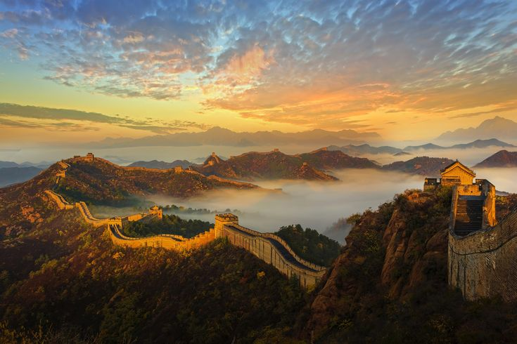

Grande Muralha da China:

Localização: Norte da China
Ano de inscrição: 1987
Conceito:
A Grande Muralha foi construída continuamente desde o século III a.C. até o século XVII d.C. na fronteira norte do país, como o grande projeto de defesa militar dos sucessivos impérios chineses, com uma extensão total de mais de 20.000 quilômetros. A Grande Muralha começa a leste em Shanhaiguan, na província de Hebei, e termina em Jiayuguan, na província de Gansu, a oeste. Seu corpo principal consiste em muralhas, caminhos para cavalos, torres de vigia e abrigos ao longo da muralha, incluindo fortalezas e passagens.
História:
Por volta de 220 a.C., sob o reinado de Qin Shi Huang, seções de fortificações anteriores foram unidas para formar um sistema de defesa unificado contra invasões vindas do norte. A construção continuou até a dinastia Ming (1368–1644), quando a Grande Muralha se tornou a maior estrutura militar do mundo. Sua importância histórica e estratégica só é comparável à sua relevância arquitetônica.